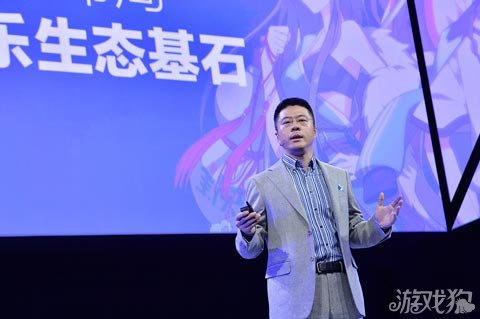
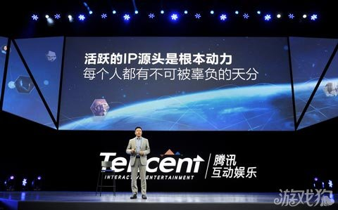
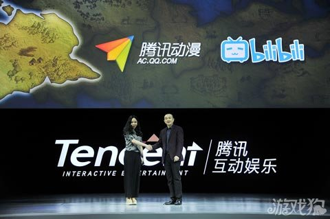
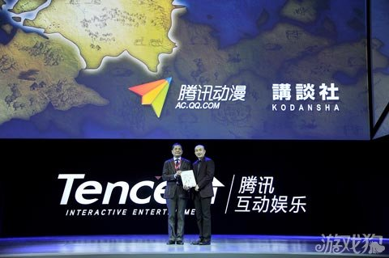
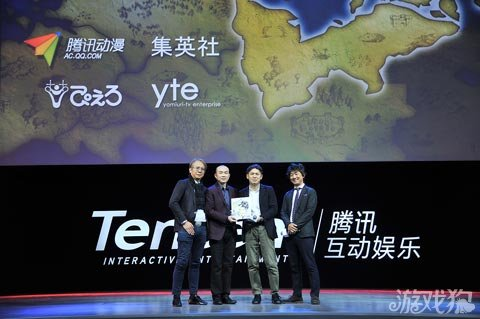
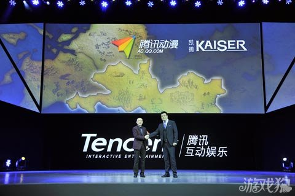
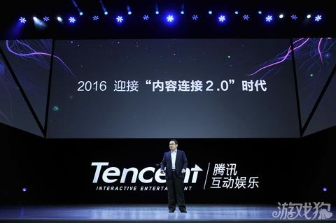
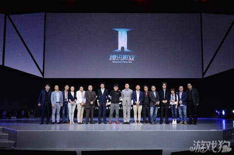
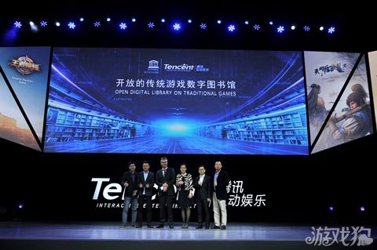

优秀界面的终极形态：隐形的界面
3月25日，“UP2016腾讯互动娱乐年度发布会”在北京国家会议中心举办。作为领先的互动娱乐综合服务提供商与“泛娱乐”概念的倡导者，腾讯互动娱乐(以下简称腾讯互娱)在本届发布会上系统发布了涵盖游戏、动漫、文学、影视等互动娱乐业务的重磅信息。其中，智能硬件也将首次亮相。在“泛娱乐”成为行业发展趋势之际，本届发布会也成为外界了解腾讯互娱泛娱乐布局的重要窗口，以及洞悉中国互动娱乐产业发展趋势的重要风向标。 腾讯集团副总裁兼腾讯影业首席执行官程武在开场演讲中表示，互联网时代快速的科技革新，前所未有地促进了人类情感和想象力的释放，推动了全球文化创意产业的蓬勃发展。中国数字文创产业正在形成全新的产业格局。这导致在过去一两年里，整个资本市场开始从用户流量入口的争夺，大量转战对内容和版权的争夺。 腾讯互娱在五年前就提出“泛娱乐”战略，即基于互联网和移动互联网的多领域共生，打造明星IP的粉丝经济，并在游戏业务的基础上相继推出动漫、文学、影视等新业务，致力构筑一个全新的泛娱乐生态。目前腾讯互娱旗下除游戏继续保持业界领先地位外，腾讯动漫也已成为中国旗舰动漫平台，阅文集团更是占据了绝对主导的产业地位，而去年新成立的腾讯影业，也开始以IP为轴心，探索票房之外的更大价值。 程武表示，在腾讯“连接”和“开放”战略下，泛娱乐逐步成为腾讯公司在“互联网+文创产业”领域的发展思路。与此同时，越来越多的行业伙伴也加入到泛娱乐布局中，这使得开放、协同、共融共生的泛娱乐生态构建真正成为可能。 在这个过程中，腾讯互娱不仅收获了数据与商业上的成长，而且正在让越来越多有天分的普通人，获得了展现想象力的机会。由互联网构建的新价值体系，正在赋予所有人更加多元、更加公平的表达空间。程武认为，这是泛娱乐生态背后最根本的动力。
手游
程武：腾讯互娱泛娱乐探索不变的三个原则
在程武看来，中国的创意产业在作品品质的打磨、在产业协作机制的完善等方面，还有很多不足与差距。未来的泛娱乐探索，整个行业都需要更高的自觉和更多的共识。基于此，程武提出了泛娱乐时代腾讯互娱对于IP探索的三个不变原则： 1、知名度不等于IP，IP是被市场验证的用户情感载体。优质的作品只是IP的起点，它需要经历多领域的共生，才能真正形成超越具体平台和形式的IP价值，才能有无限延展的生命力。 2、IP价值来自共建而非交易。IP真正的价值在于它背后的情感，在于粉丝对于这个形象、个性与故事的热爱程度，在于它始终如粉丝所期待的样子。因此，一锤子的买卖，只能获得短期的收益。只有在“共创、共享、共赢”的机制下，各展所长，才能共建IP的价值。因此，腾讯互娱会怀着最开放的态度，与伙伴共同培育IP，先在各个垂直领域纵向打造繁荣的小生态，不断输出好的作品，然后再横向联动多个内容平台，打造繁荣的大生态，通过“先纵后横”产业机制，构建具备大影响力的明星IP。 3、活跃的IP源头是根本动力，每个人都有不可被辜负的天分。IP源于人的想象力与情感，想象力与情感不分高低贵贱，没有门第出身，只有对生活的感触与天分的流露。每个人都有不可被辜负的天分，在泛娱乐时代里，任何普通人都可能实现梦想，都能成为IP的源头。 “我所期待的，就是在泛娱乐生态里，每个人都能释放情感，体验新奇的内容，也能尽情绽放自己的想象，缔造有趣的作品，然后，基于多领域共生，实现更大价值的释
腾讯动漫：加大开放合作 共建二次元经济
作为中国最大的原创及正版动漫网络平台，腾讯动漫在去年提出“二次元经济”的基础上，在本届发布会上公布了一系列开放合作举措。合作伙伴除了包括哔哩哔哩(B站)这样的国内知名二次元平台，也包括集英社、讲谈社等日本版权方。 腾讯互动娱乐动漫业务部总经理邹正宇在发布会上表示，计划在未来两年与B站联合出品约20部动画作品。
 而本次腾讯动漫与日本讲谈社达成合作，引进日本讲谈社的正版日漫，其中包括《妖精的尾巴》、《头文字D》、《宇宙兄弟》等广受动漫用户喜爱的优秀作品，这标志着腾讯动漫成为国内唯一与集英社、角川集团、讲谈社同时达成合作的平台。讲谈社董事古川公平也出席了发布会：“我们看到腾讯动漫在中国的实力，也看到了腾讯动漫在正版方面的努力和成绩。希望中国用户也可以看到正版的讲谈社漫画。”腾讯动漫还将独家引进集英社的《Jump+》漫画杂志。《Jump+》是一个由集英社顶级的创作者和编辑团队打造的线上连载杂志，引进后中国读者可以第一时间在腾讯动漫APP上观看，与日本同步更新。 版权引进合作外，此次发布会上腾讯动漫也宣布与日本顶级出版社集英社和动画制作方Studio Pierrot及读卖电视台联合组成制作委员会，共同制作日本动画《宇宙警探》
不断加大开放合作同时，作为日益重要的内容IP源头，腾讯动漫也积极适应市场需求,加快了原生IP的泛娱乐化进程。腾讯动漫将与凯撒股份合作，将旗下10部重量级IP授予凯撒股份。另外腾讯动漫还将同腾讯影业一起，与开心麻花团队合作《我叫白小飞》互动剧，并与AHA娱乐共同制作《王牌御史》真人剧等。此外，2016年上半年，腾讯动漫也将播出《狐妖小红娘·月红篇》、《戒魔人》和《一人之下》等动画新番。 “二次元世界的宏图已经展开，越来越多的小伙伴们看好这片广阔的大陆聚拢在一起。”邹正宇表示，“让我们一起，开拓新世界，进入新未来!”
阅文集团： IP最大源头发力版权保护 全面连接人与内容
作为中国最大的正版数字阅读平台以及国内文学IP最大输出源头，发布会上阅文集团联席CEO吴文辉提出“内容连接2.0”战略，表示将全面连接人与内容。全体验入口、全内容引入、全场景覆盖、全正版支持成为该战略的四个标签。 在“全体验”入口方面，2016年，QQ阅读APP依然是阅文集团的主要平台。作为承载阅文全量内容以及6亿用户的移动入口，QQ阅读日活跃用户数已跃居业界第一。 在全内容引入方面，目前阅文集团拥有8大原创文学平台，包括顶尖原创作家在内的400万名创作者队伍，作品总数1000万部，覆盖200多种内容品类。而为了推进“全民阅读”，实现全内容覆盖，阅文还与2000家出版单位建立了合作，引入哲学、科学、宗教、财经、旅游等各类出版物内容，覆盖市面上热门出版物的50%以上。 在全场景覆盖上，吴文辉表示阅文的内容将实现对于各阅读终端的立体式无缝连接，覆盖全阅读场景。在现场，吴文辉宣布了阅文电纸书即将上市消息。这款阅文自主研发的电纸书专为中国读者设计，主要面向酷爱纸质阅读体验的重度用户。 在全正版支持上，网络文学被认为是目前IP改编最大源头之一，而阅文集团覆盖了网络文学改编游戏、影视等泛娱乐作品90%以上市场份额。因此，文学领域如果盗版泛滥，将从源头上遏制整个泛娱乐产业发展，吴文辉表示，希望2016年能够成为“文学正版元年”，阅文集团将会不遗余力保护正版，捍卫作家的合法权益。
腾讯影业公布2016首份片单 泛娱乐思路探索电影新可能
“腾讯影业成立的发布会上，我曾经讲过：腾讯不会孤立的去做电影。除了全力打造高质量的电影作品之外，也会把电影作为泛娱乐业务矩阵中重要一环，追求与动漫，文学，游戏业务的充分联动。我想，这是全球文化产业的一种趋势，特别是结合好莱坞的一些成功实践来看的时候，我们很容易发现，如果电影融入一个更广阔的文化创业平台，他可以创造更大的价值，也可以给用户带来更好的体验。”程武在影视环节开场讲话中表示，基于上述思路，过去半年时间里，腾讯影业旗下三个工作室根据各自定位也开始推进业务。 “黑体工作室对影游漫联动的项目开发抱有特别的关注，大梦电影工作室则更多致力于院线类型电影的全新升级。而进化娱乐工作室则专注于国产原创动画电影创制，这会是一个潜心钻研的过程，进化娱乐工作室的负责人富源说他今天准备暂时保持沉默，但其实我们的《飞车》与《洛克王国5》等项目都正在紧锣密鼓的扎实推进，敬请各位期待。”程武提到。 发布会上，腾讯影业副总经理陈英杰介绍了黑体工作室2016年度重点项目及进展。 首先是《爵迹》。陈英杰表示，《爵迹》是腾讯影业利用互联网平台优势撬动明星IP粉丝经济的一次全新尝试。文学方面，《爵迹》小说修订版已经于3月在阅文集团平台连载。动漫方面，预计于今年夏季在腾讯动漫独家上线。游戏方面，腾讯游戏团队将用“3D MMO RPG”技术还原小说世界，也将首次邀请粉丝参与创作，预计今年下半年，手游将与电影同步上线。而基于上述泛娱乐全平台联动，腾讯影业还搭建了一个真正围绕《爵迹》IP的粉丝互动平台，活跃和转化粉丝情感。 《择天记》是腾讯影业首部电视剧大作。陈英杰宣布，《择天记》将于5月开机，香港著名导演钟澍佳担任导演，知名编剧张巍担任文学统筹。创制过程中，腾讯影业还将通过大数据为内容元素选择、故事场景构建以及角色搭配提供参考。 现场，腾讯影业副总经理陈洪伟也公布了大梦工作室本年度明星IP重点项目。 游戏IP方面，纪实武侠作家、金像奖编剧、武术指导、鬼才导演徐皓峰出席了发布会并宣布担任《天涯明月刀》导演。在此之前，同名IP已被腾讯游戏成功改编端游。而《电竞狂潮》作为中国首部电子竞技题材院线纪录电影，《微微一笑很倾城》作为首部讲述互联网一代真实游戏人生的二次元青春巨制，成为另外两个游戏相关项目。 动漫IP方面，陈洪伟公布了四部作品。前三部均来自腾讯动漫平台上超人气动漫IP：《我叫白小飞》、《狐妖小红娘》、《拓星者》，将分别与开心麻花团队、万合天宜以及青年导演张小北合作。第四部作品则来自外部IP，《十万个冷笑话2》，与万达、有妖气联合出品。 除去明星IP改编，陈洪伟还发布了新类型电影探索计划。共5部作品：1，《鲁蛇大英雄》，钮承泽导演、融合运动元素的另类喜剧;2，《幽灵旗》，苏照彬导演，灵异题材;3，《少年》，杨树鹏再执导筒，另类青春题材;4，《边境线》，改编自邵雪城人气小说, 缉毒题材;5，《国王游戏》，与日本知名导演、制片人一濑隆重(代表作《午夜凶铃》、《咒怨》)合作。 发布会上，钮承泽、苏照彬、杨树鹏、邵雪城、一濑隆重也共同上台宣布开启上述合作。 腾讯影业2016年度拟上映片单也在发布会上公布，共7部： 1、2016年2月《火影忍者剧场版：博人传》(已上映)，首部登陆国内大荧幕的火影电影，腾讯影、游、漫平台联动助力票房口碑双赢、火影IP共生共融。 2、2016年6月,《魔兽》,根据暴雪游戏IP改编，传奇影业制作，腾讯影业联合出品。 3、2016年8月,《微微一笑很倾城》，Angelababy、井柏然主演。 4、2016年9月,《电竞狂潮》，Sky、Moon、OMG战队参与拍摄。 5、2016年12月,《少年》，欧豪主演。 6、2016年12月，《十万个冷笑话2》，IP系列大电影。 7、2016年即将上映,《爵迹》，郭敬明执导，好莱坞全新视效技术。 “腾讯在所有领域一向都非常尊重人才与创意的价值。”开场讲话中，程武也重点提及了以“NEXTIDEA”、“青葱计划”为代表的腾讯影业人才培养计划，“不管是单个电影作品的创作制作，还是工作室的专业建设，乃至整个业务的成长规划，在任何一个维度，腾讯影业都真诚的期待有想法、有梦想的人才加入我们，或者与我们一起合作，共同探索中国电影产业的美好未来!”
“开放的传统游戏数字图书馆”1.0版上线 下一站希腊巴西
作为当天上午发布会压轴，腾讯互动娱乐与联合国教科文组织共同宣布了“开放的传统游戏数字图书馆-1.0 南亚及蒙古馆”(下称数字图书馆1.0)正式上线。在这一版本中，收录了共25款来自孟加拉和蒙古两国具有当地特色的传统游戏。 作为腾讯互娱首个企业社会责任项目，“开放的传统游戏数字图书馆”于去年启动，这也是联合国教科文组织与中国企业在利用信息通信技术保护传统游戏方面的首次携手和创新尝试。 “过去一年，项目组从‘全球专家顾问团’组建着手，开展调查研究、编写行动指南，并对当地的传统游戏进行了溯源采集。” 腾讯互动娱乐市场部总经理高莉在发布会现场展示了“抢新娘”、“弹羊拐骨”、以及“打牛踝”三款传统游戏的收集过程。高莉表示，互娱已经和联合国科教文组织达成了“使用知识共享许可”。 联合国教科文组织驻华代理主任Hans Dencker Thulstrup也出席了发布会并表示感谢：“没有腾讯互娱的高度重视以及强大的技术，这个项目可能就无法完成。而腾讯还能将传统游戏开发成线上游戏，更让我们无比惊喜。” Hans宣布，2016年将继续携手腾讯互娱深入两国实践：奥林匹克诞生地——希腊，以及第31届奥林匹克运动会举办国——巴西。 高莉也宣布，2016年，腾讯互娱也将继续联合《勇者大冒险》，以及《王者荣耀》、《天涯明月刀》、《御龙在天》、《地下城与勇士》等更多项目产品团队，共同探索如何利用互娱平台及泛娱乐生态体系，对于‘传统游戏’这一人类共有的IP进行保护和传承。 “希望全球合作伙伴通过我们的开放平台都可以参与其中，让这座数字图书馆变得更加开放、多元和有趣!” 腾讯游戏构建IP共生新生态 16款全终端新品将亮相 作为腾讯互娱最核心的业务，泛娱乐探索的基石，腾讯游戏全终端业务也将于25日下午集体亮相发布会。腾讯游戏各业务线的负责人与国内外战略合作伙伴高层均将出席，系统公布2016年腾讯在移动游戏、智能硬件、IP多元打造、MMOG端游、射击端游等多个游戏领域的产品布局与全新探索，具体发布信息将陆续公布。 关于腾讯互动娱乐 腾讯互动娱乐，全球领先的综合互动娱乐服务品牌，旗下涵盖腾讯游戏、阅文集团(腾讯文学)、腾讯动漫、腾讯影业四个泛娱乐业务平台，为用户提供包括游戏、文学、动漫、影视等在内的多元化、高品质的互动娱乐内容体验。 作为“泛娱乐”的提出者与有力推动者，腾讯互娱致力基于互联网与移动互联网的多领域共生，打造明星IP(知识产权，Intellectual Property)的粉丝经济，与全球伙伴一起共同构建开放、协同、共融共生的内容新生态。泛娱乐生态，让想象绽放!